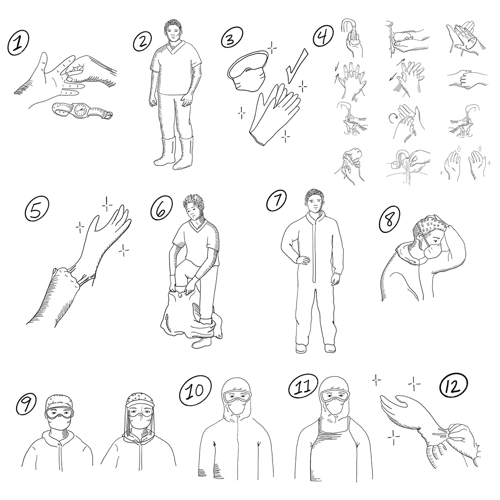
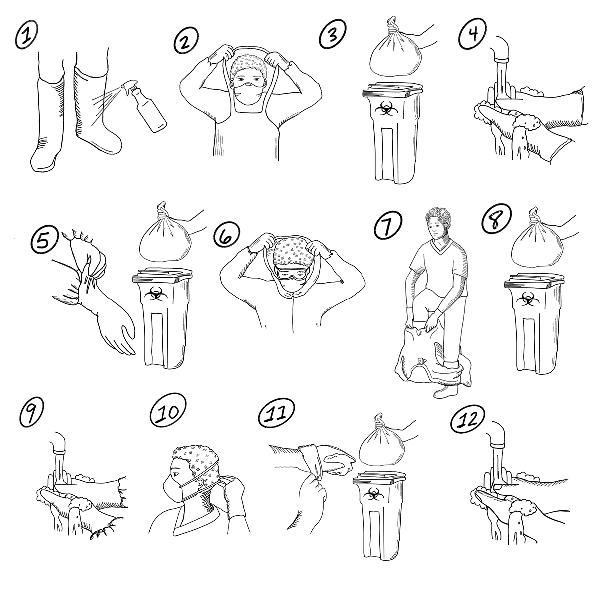

Resumen
- Cuando trabaje con ciertas enfermedades epidémicas, especialmente la fiebre de Ébola, la fiebre de Marburgo, la fiebre de Lassa y la peste, es vital que se proteja cuando toque pacientes o animales, sus fluidos corporales, o cadáveres.
- Esta herramienta le muestra cómo usar el EPP.
- Consulte la herramienta de acción 5 para obtener más información sobre la protección para los voluntarios.
Pasos para ponerse la ropa protectora.

Pasos para quitarse la ropa de protección

Nota: el lavado de manos (manos enguantadas) debe realizarse antes de comenzar a quitarse la ropa protectora, entre los pasos a seguir y al final para las manos sin guantes.
Nota: Se utilizan diferentes tipos de EPP en diferentes contextos afectando los procedimientos operativos. Siempre asegúrese de haber recibido la capacitación adecuada para utilizar el tipo de EPP disponible en su contexto.